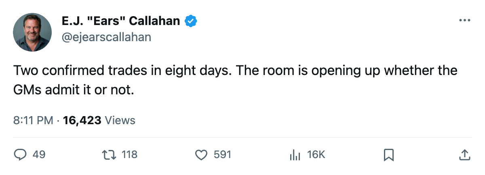
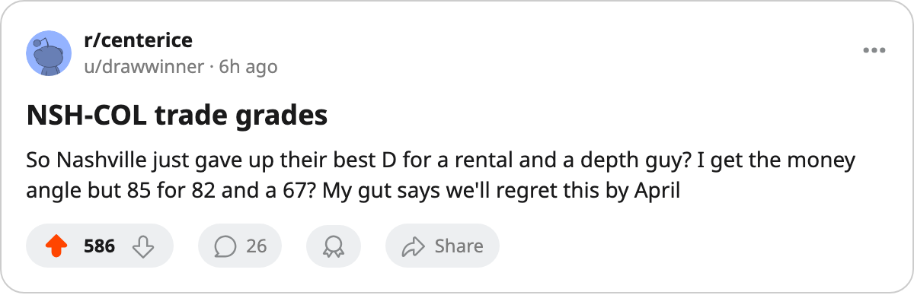

TRADE GRADES: Colorado Gets a 2-Year 85, Nashville Sheds $6.12M in Long-Term Money
The league's second confirmed deal this window sends net salary to the club with 9 picks and takes it away from the one with the league's cheapest rate.
 E.J. "Ears" CallahanInsider · The Hot Stove
E.J. "Ears" CallahanInsider · The Hot Stove

confirmed deal, the grade is the speculation

CONFIRMED. The league record has it filed 2005-12-02:  Colorado Avalanche send Derek Morris and Brett Clark to
Colorado Avalanche send Derek Morris and Brett Clark to  Nashville Predators for Sandis Ozolinsh, Andreas Johansson and Rem Murray, with one pick attached. Confidence reads news. This is the window's second confirmed trade.
Nashville Predators for Sandis Ozolinsh, Andreas Johansson and Rem Murray, with one pick attached. Confidence reads news. This is the window's second confirmed trade.
The hockey side favors Colorado
Morris is 82 overall, 27 games in, 22 points. Ozolinsh is 85 overall, on a deal with 2 years remaining. The raw number swap is 3 points of overall rating between two top-pairing defensemen, and Colorado gets the younger, longer contract. Johansson at 79 adds left wing depth on a deal with 2 years to run. Murray at 75 is a fourth-liner on an expiring deal who doesn't move the needle either way.
Clark is a 67-overall depth defenseman with 1 point in 26 games, a 3-year piece that rounds out a package. The attached pick is not a first-rounder.
The financial side is Nashville's win
NSH sends out $8.90M in total salary (Ozolinsh, Johansson, Murray combined) and absorbs $2.78M (Morris and Clark combined). The net shed is $6.12M off a payroll that already sat at $51.08M against 36 points, the league's best per-point rate at $1.42M. Colorado's payroll was $66.38M against 29 points at $2.29M per point, and the $6.12M they just absorbed makes it heavier.
| Player | To | Overall | Years left |
|---|---|---|---|
| Derek Morris | NSH | 82 | 0 |
| Brett Clark | NSH | 67 | 3 |
| Sandis Ozolinsh | COL | 85 | 2 |
| Andreas Johansson | COL | 79 | 2 |
| Rem Murray | COL | 75 | 0 |
What the standings say
NSH sits 11-6-2, second in the Central, 36 points. They are a playoff club making a financial play: cut long money, keep an expiring defenseman who just posted 22 points, and live with the 67-overall depth piece. If Morris re-signs somewhere else this summer, NSH will have shed a 2-year top-pairing contract and gotten a half-season rental out of the middle of it.
COL sits 10-10-5, second in the Northwest, 29 points. With 9 picks (the most in the league) and now also a 2-year top-pair defenseman and a 2-year 79-overall left wing, that reads like a team trying to close a 7-point gap to first place in the Northwest while keeping the capital it has accumulated.
The league has 101 days to the trade deadline.

